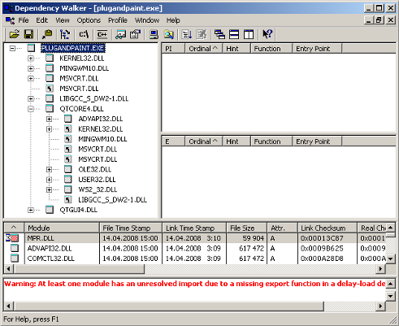

Contents
- Static Linking
- Building Qt Statically
- Linking the Application to the Static Version of Qt
- Shared Libraries
- Building Qt as a Shared Library
- Linking the Application to Qt as a Shared Library
- Creating the Application Package
- Manifest files
- Manual installations with Visual Studio 2008 and 2010
- Application Dependencies
- Additional Libraries
- Qt Plugins
- Related Third Party Resources
Deploying an Application on Windows
This documentation will describe how to determine which files you should include in your distribution, and how to make sure that the application will find them at run-time. We will demonstrate the procedures in terms of deploying the Plug & Paint application that is provided in Qt's examples directory.
Contents:
Static Linking
If you want to keep things simple by only having a few files to deploy, i.e. a stand-alone executable with the associated compiler specific DLLs, then you must build everything statically.
Building Qt Statically
Before we can build our application we must make sure that Qt is built statically. To do this, go to a command prompt and type the following:
cd C:\path\to\Qt configure -static <any other options you need>
Remember to specify any other options you need, such as data base drivers, as arguments to configure. Once configure has finished, type the following:
nmake sub-src
This will build Qt statically. Note that we have used nmake in all the examples, but mingw32-make should be used for MinGW.
Note: If you later need to reconfigure and rebuild Qt from the same location, ensure that all traces of the previous configuration are removed by entering the build directory and typing nmake distclean before running configure again.
Linking the Application to the Static Version of Qt
Once Qt has finished building we can build the Plug & Paint application. First we must go into the directory that contains the application:
cd examples\tools\plugandpaint
We must then run qmake to create a new makefile for the application, and do a clean build to create the statically linked executable:
nmake clean
qmake -config release
nmake
You probably want to link against the release libraries, and you can specify this when invoking qmake. Now, provided that everything compiled and linked without any errors, we should have a plugandpaint.exe file that is ready for deployment. One easy way to check that the application really can be run stand-alone is to copy it to a machine that doesn't have Qt or any Qt applications installed, and run it on that machine.
Remember that if your application depends on compiler specific libraries, these must still be redistributed along with your application. You can check which libraries your application is linking against by using the depends tool. For more information, see the Application Dependencies section.
The Plug & Paint example consists of several components: The application itself (Plug & Paint), and the Basic Tools and Extra Filters plugins. Since we cannot deploy plugins using the static linking approach, the application we have prepared is incomplete. It will run, but the functionality will be disabled due to the missing plugins. To deploy plugin-based applications we should use the shared library approach.
Shared Libraries
We have two challenges when deploying the Plug & Paint application using the shared libraries approach: The Qt runtime has to be correctly redistributed along with the application executable, and the plugins have to be installed in the correct location on the target system so that the application can find them.
Building Qt as a Shared Library
We assume that you already have installed Qt as a shared library, which is the default when installing Qt, in the C:\path\to\Qt directory. For more information on how to build Qt, see the Installation documentation.
Linking the Application to Qt as a Shared Library
After ensuring that Qt is built as a shared library, we can build the Plug & Paint application. First, we must go into the directory that contains the application:
cd examples\tools\plugandpaint
Now run qmake to create a new makefile for the application, and do a clean build to create the dynamically linked executable:
nmake clean
qmake -config release
nmake
This builds the core application, the following will build the plugins:
cd ..\plugandpaintplugins nmake clean qmake -config release nmake
If everything compiled and linked without any errors, we will get a plugandpaint.exe executable and the pnp_basictools.dll and pnp_extrafilters.dll plugin files.
Creating the Application Package
To deploy the application, we must make sure that we copy the relevant Qt DLL (corresponding to the Qt modules used in the application) and the windows platform plugin as well as the executable to the same directory in the release subdirectory.
In contrast to user plugins, Qt plugins have to be put into subdirectories matching the plugin type. As we want to deploy the windows platform plugin it has to be put into a "platforms" subdirectory. Additional information about user and Qt plugins will be covered later.
Qt relies on the ICU library for unicode support. Therefore, you must include the ICU DLLs that are located in the bin directory of your Qt installation if Qt was configured to use ICU. The Qt version bundled in the Qt5 package uses ICU, so deployment is needed there. The ICU DLLs are version dependent and have to match the ones your Qt version was linked against.
If you are using ANGLE (the default) then you additionally need to include both libEGL.dll and libGLESv2.dll from Qt's 'lib' directory as well as the HLSL compiler from DirectX. The HLSL compiler library is called d3dcompiler_XX.dll where XX is the version number that ANGLE (libGLESv2) was linked against.
Remember that if your application depends on compiler specific libraries, these must be redistributed along with your application. You can check which libraries your application is linking against by using the depends tool. For more information, see the Application Dependencies section.
We'll cover the plugins shortly, but first we'll check that the application will work in a deployed environment: Either copy the executable and the Qt DLLs to a machine that doesn't have Qt or any Qt applications installed, or if you want to test on the build machine, ensure that the machine doesn't have Qt in its environment.
If the application starts without any problems, then we have successfully made a dynamically linked version of the Plug & Paint application. But the application's functionality will still be missing since we have not yet deployed the associated plugins.
Plugins work differently to normal DLLs, so we can't just copy them into the same directory as our application's executable as we did with the Qt DLLs. When looking for plugins, the application searches in a plugins subdirectory inside the directory of the application executable.
So to make the plugins available to our application, we have to create the plugins subdirectory and copy over the relevant DLLs:
plugins\pnp_basictools.dll plugins\pnp_extrafilters.dll
An archive distributing all the Qt DLLs and application specific plugins required to run the Plug & Paint application, would have to include the following files:
| Component | File Name | |
|---|---|---|
| The executable | plugandpaint.exe | |
| The Basic Tools plugin | plugins\pnp_basictools.dll | |
| The ExtraFilters plugin | plugins\pnp_extrafilters.dll | |
| The Qt Windows platform plugin | platforms\qwindows.dll | |
| The Qt Core module | Qt5Core.dll | |
| The Qt GUI module | Qt5Gui.dll | |
| The Qt Widgets module | Qt5Widgets.dll | |
In addition, the archive must contain the following compiler specific libraries depending on your version of Visual Studio:
| VC++ 8.0 (2005) | VC++ 9.0 (2008) | VC++ 10.0 (2010) | |
|---|---|---|---|
| The C run-time | msvcr80.dll | msvcr90.dll | msvcr100.dll |
| The C++ run-time | msvcp80.dll | msvcp90.dll | msvcp100.dll |
If ICU was used, the archive must contain:
| File Name | ||
|---|---|---|
| icudtXX.dll | icuinXX.dll | icuucXX.dll |
Finally, if ANGLE was used, then the archive must additionally contain:
| File Name | ||
|---|---|---|
| libEGL.dll | libGLESv2.dll | d3dcompiler_XX.dll |
To verify that the application now can be successfully deployed, you can extract this archive on a machine without Qt and without any compiler installed, and try to run it.
An alternative to putting the plugins in the plugins subdirectory is to add a custom search path when you start your application using QApplication::addLibraryPath() or QApplication::setLibraryPaths().
qApp->addLibraryPath("C:\some\other\path");
One benefit of using plugins is that they can easily be made available to a whole family of applications.
It's often most convenient to add the path in the application's main() function, right after the QApplication object is created. Once the path is added, the application will search it for plugins, in addition to looking in the plugins subdirectory in the application's own directory. Any number of additional paths can be added.
Manifest files
When deploying an application compiled with Visual Studio 2005 onwards, there are some additional steps to be taken.
First, we need to copy the manifest file created when linking the application. This manifest file contains information about the application's dependencies on side-by-side assemblies, such as the runtime libraries.
The manifest file needs to be copied into the same folder as the application executable. You do not need to copy the manifest files for shared libraries (DLLs), since they are not used.
If the shared library has dependencies that are different from the application using it, the manifest file needs to be embedded into the DLL binary. Since Qt 4.1.3, the follwoing CONFIG options are available for embedding manifests:
embed_manifest_dll embed_manifest_exe
To use the options, add
CONFIG += embed_manifest_exe
to your .pro file. The embed_manifest_dll option is enabled by default. The embed_manifest_exe option is NOT enabled by default.
You can find more information about manifest files and side-by-side assemblies at the MSDN website.
The correct way to include the runtime libraries with your application is to ensure that they are installed on the end-user's system.
To install the runtime libraries on the end-user's system, you need to include the appropriate Visual C++ Redistributable Package (VCRedist) executable with your application and ensure that it is executed when the user installs your application.
For example, on an 32-bit x86-based system, you would include the vcredist_x86.exe executable. The vcredist_IA64.exe and vcredist_x64.exe executables provide the appropriate libraries for the IA64 and 64-bit x86 architectures, respectively.
Note: The application you ship must be compiled with exactly the same compiler version against the same C runtime version. This prevents deploying errors caused by different versions of the C runtime libraries.
Manual installations with Visual Studio 2008 and 2010
As well as the above details for VS 2005 and onwards, Visual Studio 2008/2010 applications may have problems when deploying manually, say to a USB stick.
The recommended procedure is to configure Qt with the -plugin-manifests option using the 'configure' tool. Then follow the guidelines for manually deploying private assemblies.
In brief the steps are
- create a folder structure on the development computer that will match the target USB stick directory structure, for example '\app' and for your dlls, '\app\lib'.
- on the development computer, from the appropriate 'redist' folder copy over Microsoft.VC80.CRT and Microsoft.VC80.MFC to the directories '\app' and '\app\lib' on the development PC.
- xcopy the \app folder to the target USB stick.
Your application should now run. Also be aware that even with a service pack installed the Windows DLLs that are linked to will be the defaults. See the information on how to select the appropriate target DLLs.
Application Dependencies
Additional Libraries
Depending on configuration, compiler specific libraries must be redistributed along with your application.
For example, if Qt is built using ANGLE, its shared libraries and the required shared libraries of the Direct X SDK need to be shipped as well.
You can check which libraries your application is linking against by using the Dependency Walker tool. All you need to do is to run it like this:
depends <application executable>
This will provide a list of the libraries that your application depends on and other information.

When looking at the release build of the Plug & Paint executable (plugandpaint.exe) with the depends tool, the tool lists the following immediate dependencies to non-system libraries:
| Qt | VC++ 8.0 (2005) | VC++ 9.0 (2008) | VC++ 10.0 (2010) | MinGW |
|---|---|---|---|---|
|
|
|
|
When looking at the plugin DLLs the exact same dependencies are listed.
Qt Plugins
Your application may also depend on one or more Qt plugins, such as the print support plugin, the JPEG image format plugin or a SQL driver plugin. Be sure to distribute any Qt plugins that you need with your application, and note that each type of plugin should be located within a specific subdirectory (such as printsupport, imageformats or sqldrivers) within your distribution directory, as described below.
Note: If you are deploying an application that uses QtWebKit to display HTML pages from the World Wide Web, you should include all text codec plugins to support as many HTML encodings possible.
The search path for Qt plugins is hard-coded into the QtCore library. By default, the plugins subdirectory of the Qt installation is the first plugin search path. However, pre-determined paths like the default one have certain disadvantages. For example, they may not exist on the target machine. For that reason, you need to examine various alternatives to make sure that the Qt plugins are found:
- Using qt.conf. This approach is the recommended if you have executables in different places sharing the same plugins.
- Using QApplication::addLibraryPath() or QApplication::setLibraryPaths(). This approach is recommended if you only have one executable that will use the plugin.
- Using a third party installation utility to change the hard-coded paths in the QtCore library.
If you add a custom path using QApplication::addLibraryPath it could look like this:
qApp->addLibraryPath("C:/customPath/plugins");
Then qApp->libraryPaths() would return something like this:
"C:/customPath/plugins" "C:/Qt/5.0.2/plugins" "E:/myApplication/directory/"
The executable will look for the plugins in these directories and the same order as the QStringList returned by qApp->libraryPaths(). The newly added path is prepended to the qApp->libraryPaths() which means that it will be searched through first. However, if you use qApp->setLibraryPaths(), you will be able to determine which paths and in which order they will be searched.
The How to Create Qt Plugins document outlines the issues you need to pay attention to when building and deploying plugins for Qt applications.
Related Third Party Resources
- Cross compiling Qt/Win Apps on Linux covers the process of cross-compiling Windows applications on Linux.
- Cross-compiling Qt4/Win on Linux provides another Linux-to-Windows cross-compilation guide.